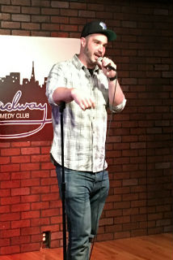
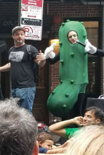
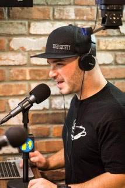
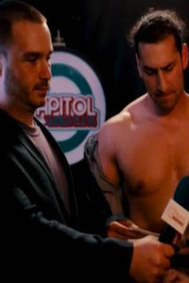

Chris Faga is a Brooklyn born comedian, writer, chef, and podcaster. His XM radio show "High Society Radio" won and orbitcast award for "The best kept secret in satellite radio". He is currently a host at the GaS digital network of podcasts and can be seen on many of the shows on that platform. His "Wolfhead and Paperface" animated shorts have been featured in festivals in Europe the U.S. and Australia. He was also the NYC pickling champion for 2017.
   
PODCAST
Chris can be found weekly on his podcast High Society Radio
In 2007 Chris started High Society Radio with his co-hosts Bronx Johnny and Chris "Pepper Hicks" Stanley. The show started as weekend programming for XM radio's Opie and Anthony channel in 2007. Despite being well received by fans of the channel and winning an Orbitcast award for "best kept secret in satellite radio" the show was never picked up. After years of self publishing and jumping around podcast networks the team landed at the GaS digital network in 2016 as one of their launch shows.
Check out a clip
Or the latest episode
COMICS
In 2018 Chris founded the independent comic book imprint Flying Robot Cities with his long time friends Shakedog and Paperface. The Company's debut book Snakedick Legend of the Manaconda reached Kickstarter funding in under 2 weeks and debuted at the comedy festival Skankfest NYC in summer of 2018. The team has previously worked on the Science Fantasy title Optomo and done work for Kayfabe: a Wrestling Anthology.